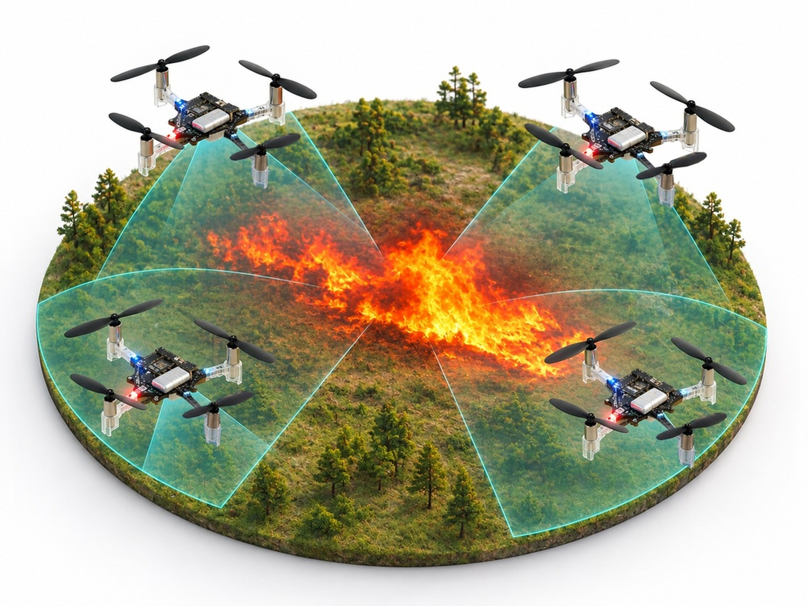

Real-Time Resource Allocation for Learned Multi-UAV Monitoring
[DRAFT TEXT 1 — what & why] A team of small UAVs monitors a spreading thermal field, such as a wildfire front, and must decide in real time how much of the field each vehicle covers. Each UAV flies a learned coverage policy, and a distributed resource-allocation layer assigns every vehicle its coverage radius so the team follows the demand while a shared budget constraint is respected at every instant.
[DRAFT TEXT 2 — what we show] We present a real-time distributed allocation method that keeps the allocation feasible while the demand changes, compare it against online dual methods from the literature, and demonstrate the full stack on four Crazyflie quadrotors in a motion-capture arena.

Sense → allocate → plan
Demos
What the allocator buys you
[DRAFT TEXT 3] Two figures, one sentence each. Numbers stay in the captions, not the prose.
Hardware and software stack
[DRAFT TEXT 4] One short paragraph on the arena and what runs where (allocator on the ground station vs on-board, planner rate, radio).
[DRAFT] Authors line goes here once the paper is public.